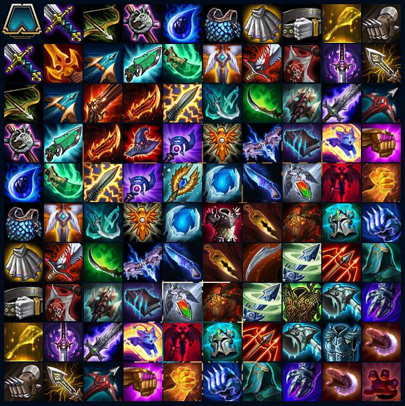

Objetos

Combinaciones y objetos que se crean
El Espadón otorga +15 de daño de Ataque. Sus fusiones son las siguientes:
Filo mortal: (Espadón + Espadón). Al participar en una eliminación, otorga 15 de daño de ataque adicional hasta que finalice el combate (se acumula de forma infinita). Comienzas automáticamente con una acumulación.
Verdugo de gigantes: (Espadón + Arco curvo) Los ataques infligen un 5 % adicional de la vida máxima del enemigo como daño verdadero.
Sable-pistola hextech: (Espadón + Vara innecesariamente grande). Cura un 25% del daño infligido.
Filo de Shojin: (Espadón + Lágrima de la diosa). Tras realizar una habilidad, recuperas un 15% del maná por ataque.
Ángel de la guarda: (Espadón + Chaleco de cadenas). Revives con 800 puntos de vida.
Sanguinaria: (Espadón + Capa negatrón). Obtienes +50% de robo de vida.
Heraldo de Zeke: (Espadón + Cinturón de gigante). Emite un aura que afecta a todos los aliados a un máximo de dos casillas de distancia a izquierda y derecha del ortador.
Aumenta la velocidad de ataque un 15%.
Filo espectral de Youmuu: (Espadón + Espátula). El portador es también un Asesino.
Filo infinito: (Guantes de combate + Espadón) El daño crítico se incrementa un 125%, +20% de posibilidad de golpe crítico.
Combinaciones y objetos que se crean
El Arco curvo otorga un +20% adicional de Velocidad de ataque. Sus fusiones son las siguientes:
Cañón de fuego rápido: (Arco curvo + Arco curvo). El Rango de ataque se modifica según los cambios de alcance de cada Campeón.
Hoja de furia de Guinsoo: (Arco curvo + Vara innecesariamente grande). Los ataques obtienen un 3% de Velocidad de ataque) Se acumula infinitamente..
Bailarinas espectrales: (Arco curvo + Chaleco de cadenas). El portador esquiva todos los Golpes Críticos.
Puñal de Statikk: (Arco curvo + Lágrima de la diosa). Cada tercer ataque golpea a 3 objetivos adicionales. Solamente se activa una vez por cada ataque lanzado, hace 100 puntos de daño por cada rebote.
Bailarinas espectrales: (Chaleco de cadenas + Arco curvo). El portador esquiva todos los Golpes Críticos.
Espada maldita: (Arco curvo + Capa negatrón). Los ataques tienen una pequeña oportunidad de Cegar [Reduce el nivel de estrellas del enemigo en 1, puede reducir el nivel de estrellas a 0].
Hidra titánica: (Arco curvo + Cinturón de gigante). Los ataques hacen un daño de salpicadura equivalente al 3 % de la vida máxima al objetivo y a los enemigos adyacentes que estén detrás de este.
Hoja del Rey Arruinado: (Arco curvo + Espátula). El portador es también un Espadachín.
Ballesta de repetición: (Guantes de combate + Arco curvo) Al morir el portador, pasa a un campeón aliado y le otorga un 20 % adicional de velocidad de ataque y de probabilidad de impacto crítico.
Verdugo de gigantes: (Espadón + Arco curvo) Los ataques infligen un 5 % adicional de la vida máxima del enemigo como daño verdadero.
La Vara innecesariamente grande otorga un aumento del +20% del Daño mágico. Sus fusiones son las siguientes:
Sombrero mortal de Rabadon: (Vara innecesariamente grande + Vara innecesariamente grande). Otorga un 50% más de Poder de habilidad.
Sable-pistola hextech: (Vara innecesariamente grande + Espadón). Cura un 25% del daño infligido.
Hoja de furia de Guinsoo: (Vara innecesariamente grande + Arco curvo). Los ataques obtienen un 3% de Velocidad de ataque, se acumula infinitamente.
Eco de Luden: (Lágrima de la diosa + Vara innecesariamente grande). Los hechizos hacen 180 de daño al objetivo directo y hasta 200 de daño de área.
Medallón de los Solari de Hierro: (Vara innecesariamente grande + Chaleco de cadenas). Al principio del combate, todos los aliados a una distancia de dos casillas a izquierda y derecha del portador y el propio portador reciben un escudo de 300 durante 7 segundos.
Chispa iónica: (Vara innecesariamente grande + Capa negatrón). Cuando un enemigo lanza un hechizo recibe 125 de daño.
Morellonomicón: (Vara innecesariamente grande + Cinturón de gigante). Los hechizos hacen daño equivalente a un 20 % de la vida máxima a lo largo de 10 segundos.
Yuumi : (Vara innecesariamente grande + Espátula). El portador es también un Hechicero.
Guantelete arcano: (Guantes de combate + Vara innecesariamente grande) Vuestras habilidades pueden asestar impactos críticos.
Guantelete enjoyado: (Guantes de combate + Vara innecesariamente grande) Los hechizos pueden infligir daño crítico.
Combinaciones y objetos que se crean
La Lágrima de la diosa da al portador +20 puntos de maná. Sus fusiones son las siguientes:
Abrazo del serafín: (Lágrima de la diosa + Lágrima de la diosa). Devuelve 20 de maná cada vez que se lanza un hechizo.
Filo de Shojin: (Espadón + Lágrima de la diosa). Tras realizar una habilidad, recuperas un 15% del maná por ataque.
Puñal de Statikk: (Lágrima de la diosa + Arco curvo). Cada tercer ataque golpea a 3 objetivos adicionales. Solamente se activa una vez por cada ataque lanzado, hace 100 puntos de daño por cada rebote.
Eco de Luden: (Lágrima de la diosa + Vara innecesariamente grande). Los hechizos hacen 180 de daño al objetivo directo y hasta 200 de daño de área.
Corazón de hielo: (Lágrima de la diosa + Chaleco de cadenas). Los enemigos adyacentes pierden un 35% de Velocidad de ataque. Dura 1 segundo.
Hush: (Capa negatrón + Lágrima de la diosa). Alta probabilidad de silenciar.
Redención: (Lágrima de la diosa + Cinturón de gigante). Cuando al portador le queda un 25% de vida, cura 1.500 puntos de vida a los aliados.
Darkin: (Lágrima de la diosa + Espátula). El portador es también un Demonio.
La mano de la justicia: (Guantes de combate + Lágrima de la diosa) Al comienzo de una ronda, otorga un 40 % de daño adicional o 40 de vida al golpear.
Combinaciones y objetos que se crean
El Chaleco de cadenas otorga + 20 de Armadura. Sus fusiones son las siguientes:
Malla de espinas: (Chaleco de cadenas + Chaleco de cadenas). Refleja el 35% del daño recibido, mitiga el 100% del daño recibido, el daño que reflejas es Daño verdadero.
Ángel de la guarda: (Chaleco de cadenas + Espadón). Revives con 800 puntos de vida.
Bailarinas espectrales: (Chaleco de cadenas + Arco curvo). El portador esquiva todos los Golpes Críticos.
Medallón de los Solari de Hierro: (Chaleco de cadenas + Vara innecesariamente grande). Al principio del combate, todos los aliados a una distancia de dos casillas a izquierda y derecha del portador y el propio portador reciben un escudo de 300 durante 7 segundos.
Corazón de hielo: (Lágrima de la diosa + Chaleco de cadenas). Los enemigos adyacentes pierden un 35% de Velocidad de ataque. Dura 1 segundo.
Rompeespadas: (Chaleco de cadenas + Capa negatrón). Los ataques pueden desarmar al enemigo (33% de probabilidad durante 3 segundos).
Mejora roja: (Chaleco de cadenas + Cinturón de gigante). Los ataques hacen un daño equivalente al 20 % de la vida máxima a lo largo de 10 segundos.
Promesa de caballero: (Chaleco de cadenas + Espátula). El portador es también un Caballero.
Guantelete de hielo: (Guantes de combate + Chaleco de cadenas) Al esquivar, crea una zona que va aumentando y reduce la velocidad de ataque un 35 %.
Combinaciones y objetos que se crean
La Capa negatrón da al portador +20 de Resistencia mágica. Sus fusiones son las siguientes:
Garra de dragón: (Capa negatrón + Capa negatrón). Gana un 75% de resistencia al daño mágico.
Sanguinaria: (Espadón + Capa negatrón). Obtienes +50% de robo de vida.
Espada maldita: (Capa negatrón + Arco curvo). Los ataques tienen una pequeña oportunidad de Cegar [Reduce el nivel de estrellas del enemigo en 1, puede reducir el nivel de estrellas a 0].
Chispa iónica: (Capa negatrón + Vara innecesariamente grande). Cuando un enemigo lanza un hechizo recibe 125 de daño verdadero.
Quietud: (Lágrima de la diosa + Capa negatrón). 33% de probabilidad de bloquear la generación de maná del enemigo durante 4 segundos.
Rompeespadas: (Capa negatrón + Chaleco de cadenas). Los ataques pueden desarmar al enemigo (33% de probabilidad durante 3 segundos).
Céfiro: (Capa negatrón + Cinturón de gigante). Al principio del combate, desvanece a un enemigo durante 6 segundos. Es un objeto único.
Huracán de Runaan: (Capa negatrón + Espátula). Lanza un proyectil con un 25% de daño y con efectos de impacto.
Fajín de mercurio: (Guantes de combate + Capa negatrón) Elimina un efecto de control de adversario sobre el portador. 3 s de enfriamiento.
Combinaciones y objetos que se crean
El Cinturón de gigante otorga +200 de Vida. Sus fusiones son las siguientes:
Armadura de Warmog: (Cinturón de gigante + Cinturón de gigante). El portador regenera un 6% de la vida que le falte. Cura un máximo de 400 de vida por pulso. Su efecto se reduce sobre todo en los dragones PvE.
Heraldo de Zeke: (Cinturón de gigante + Espadón). Emite un aura que afecta a todos los aliados a un máximo de dos casillas de distancia a izquierda y derecha del ortador. Aumenta la velocidad de ataque un 15%.
Hidra titánica: (Cinturón de gigante + Arco curvo). Los ataques hacen un daño de salpicadura equivalente al 3 % de la vida máxima al objetivo y a los enemigos adyacentes que estén detrás de este.
Morellonomicón: (Cinturón de gigante + Vara innecesariamente grande). Los hechizos hacen daño equivalente a un 20 % de la vida máxima a lo largo de 10 segundos.
Redención: (Cinturón de gigante + Lágrima de la diosa). Cuando al portador le queda un 25% de vida, cura 1.500 puntos de vida a los aliados.
Mejora roja: (Cinturón de gigante + Chaleco de cadenas). Los ataques hacen un daño 20 % de la vida máxima a lo largo de 10 segundos.
Céfiro: (Cinturón de gigante + Capa negatrón). Al principio del combate, desvanece a un enemigo durante 6 segundos. Es un objeto único.
Mazo helado: (Cinturón de gigante + Espátula). El portador es también Glacial.
Garra trampa: (Guantes de combate + Cinturón de gigante) Al comenzar el combate, otorga un escudo de hechizos. Cuando desaparece, aturde al campeón que lo ha roto.
Combinaciones y objetos que se crean
¿Qué hace la espátula? "Debe hacer algo…", se puede leer en su descripción. A excepción de dos fusiones, este objeto se combina con los demás para crear ítems que otorgan una clase adicional al portador. Además, desde una reciente actualización, duplica las estadísticas del componente con el que se combine.
Fuerza de la naturaleza: (Espátula + Espátula). Gana +1 en el tamaño del equipo.
Filo espectral de Youmuu: (Espátula + Espadón). El portador es también un Asesino.
Hoja del Rey Arruinado: (Espátula + Arco curvo). El portador es también un Espadachín.
Yuumi: (Espátula + Vara innecesariamente grande). El portador es también un Hechicero.
Darkin: (Espátula + Lágrima de la diosa). El portador es también un Demonio.
Promesa de caballero: (Espátula + Chaleco de cadenas). El portador es también un Caballero.
Huracán de Runaan: (Espátula + Capa negatrón). Lanza un proyectil con un 25% de daño y con efectos de impacto.
Mazo helado: (Espátula + Cinturón de gigante). El portador es también Glacial.
Mitones: (Guantes de combate + Espátula dorada) El campeón también cuenta como un yordle..
Combinaciones y objetos que se crean
Los Guantes de combate otorgan un 10% de mejora de esquivar y un 10% de mejora de impacto crítico. Sus combinaciones son las siguientes:
Guantes de ladrón:
(Guantes de combate + Guantes de combate) Este objeto ocupa los tres huecos para objetos. Al comenzar la ronda, copia dos objetos al azar.
La mano de la justicia: (Guantes de combate + Lágrima de la diosa) Al comienzo de una ronda, otorga un 40 % de daño adicional o 40 de vida al golpear.
Filo infinito: (Guantes de combate + Espadón) El daño crítico se incrementa un 125%, +20% de posibilidad de crítico.
Guantelete arcano: (Guantes de combate + Vara innecesariamente grande) Vuestras habilidades pueden asestar impactos críticos.
Fajín de mercurio: (Guantes de combate + Capa negatrón) Elimina un efecto de control de adversario sobre el portador. 3 s de enfriamiento.
Guantelete de hielo: (Guantes de combate + Chaleco de cadenas) Al esquivar, crea una zona que va aumentando y reduce la velocidad de ataque un 35 %.
Guante de duelo: (Guantes de combate + Cinturón de gigante) El portador empieza el combate con un escudo de hechizos que aturde al enemigo que lo rompa durante mucho tiempo.
Ballesta de repetición: (Guantes de combate + Arco curvo) Al morir el portador, pasa a un campeón aliado y le otorga un 20 % adicional de velocidad de ataque y de probabilidad de impacto crítico.
Mitones: (Guantes de combate + Espátula dorada) El campeón también cuenta como un yordle.
Guantelete enjoyado: (Guantes de combate + Vara innecesariamente grande) Los hechizos pueden infligir daño crítico.
Garra trampa: (Guantes de combate + Cinturón de gigante) Al comenzar el combate, otorga un escudo de hechizos. Cuando desaparece, aturde al campeón que lo ha roto.